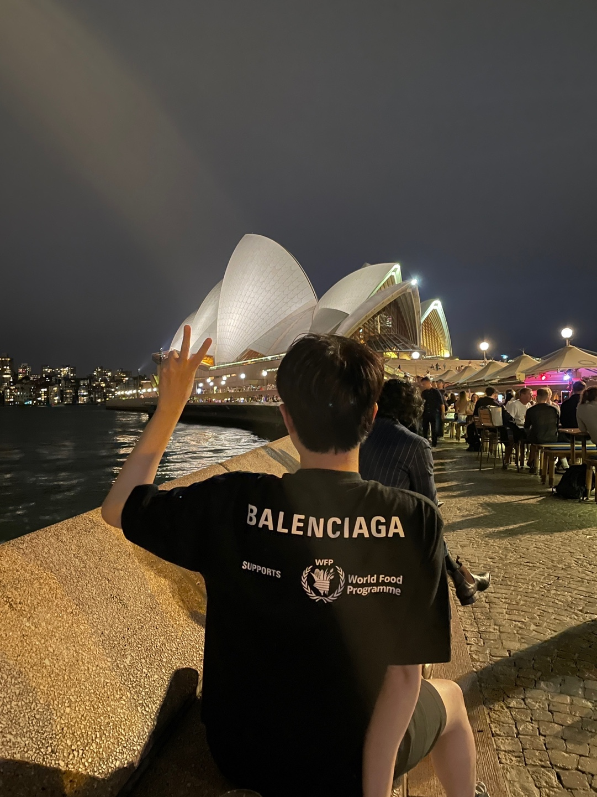

|
Taegyeong Lee Hi, I'm Taegyeong Lee. I'm passionate about novel research that explores generating images or videos from audio and text—integrating various modalities. I enjoy conducting research that is simple yet effective, leveraging multimodal and generative models to make a strong impact in the real world. I am currently working as a AI reseacher on the FnGuide LLM TFT, focusing on LLMs and RAG. Previously, I earned my Master’s degree from the UNIST AIGS. I interned at the ETRI and completed the Software Maestro 8th. I also served as a software developer in the Promotion Data Management Division at the Republic of Korea Army Headquarters. I hold a Bachelor of Computer Engineering from Pukyong National University. |
 |
Research
My current primary research interests include: |
|
|
QGuard: Question-based Zero-shot Guard for Multi-modal LLM Safety
Taegyeong Lee, Jeonghwa Yoo, Hyoungseo Cho, Soo Yong Kim and Yunho Maeng ACL 2025 Workshop (The 9th Workshop on Online Abuse and Harms) This paper proposes a simple yet effective question prompting method to block harmful prompts, including multi-modal ones, in a zero-shot and robust manner. |
|
|
Multi-aspect Knowledge Distillation with Large Language
Model
Taegyeong Lee, Jinsik Bang, Soyeong Kwon, Taehwan Kim, CVPR 2025 Workshop (The 12th Workshop on Fine-Grained Visual Categorization) github / arXiv We introduce a multi-aspect knowledge distillation method using MLLMs to enhance vision models by learning both visual and abstract aspects, improving performance across tasks. |

|
Generating Realistic Images from In-the-wild Sounds
Taegyeong Lee, Jeonghun Kang, Hyeonyu Kim, Taehwan Kim, ICCV, 2023 github / arXiv We propose a diffusion-based model that generates images from wild sounds using audio captioning, attention mechanisms, and CLIP-based optimization, achieving superior results. |
|
|
Generating Emotional Face Images using Audio Information
for Sensory Substitution
Taegyeong Lee, Hyerin Uhm, Chi Yoon Jeong, Chae-Kyu Kim, Journal of Korea Multimedia Society, 2023 (Outstanding Paper Award) We propose a method to generate images optimized for sound intensity, enhancing V2A models for improved face image generation. |
|
|
An enhanced model of Face Reenactment and Transformation Models based on Head pose vector
Taegyeong Lee, Gyubin Park, HyeJin Seo, Su-Hwa Jo, Chae-Kyu Kim, Conference of Korea Multimedia Society, 2021 (AI Capstone Design Grand Prize) We proposes a face synthesis method using dense landmarks for accurate head pose estimation, yielding more natural results than existing methods. |
|
Feel free to steal this website's source code. Do not scrape the HTML from this page itself, as it includes analytics tags that you do not want on your own website — use the github code instead. Also, consider using Leonid Keselman's Jekyll fork of this page. |